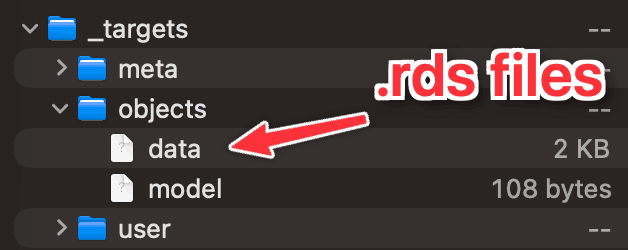

Building reproducible
workflows with {targets}
Welcome!
Plan for today
Why care about workflows?
How {targets} works
Hand-on {targets} practice!
About me
Andrew Heiss
Assistant professor of public policy, Georgia State University
Data visualization, statistics, and causal inference

Follow along
All the materials for today are accessible at
Why care about workflows?
Statistical research
is a complicated,
messy process!
Itty bitty pieces
- Data
- Statistical results
- Code
- Fieldwork
- Interviews
- Analysis
- Figures
- Images
- Tables
- Citations
- Your actual words
Each of these come
from different places!
Each of these can be
in a different state!
Approaches for handling all the itty bitty pieces
The Office model
Put everything in one document
- Everything lives in one
.docxfile
The Engineering model
Embrace the bittiness and compile it all at the end
- Everything lives separately and is combined in the end
- Quarto!
Approaches for handling different states
YOLO workflow
Mentally remember to run all the scripts when data changes, replace old figures/tables/values with new values, and manually run everything in the right order.
Procedural workflow
Carefully document the precise order that your scripts run, maybe even with a master script that runs everything for you. Run the master script when data changes and rebuild the whole thing every time. Maybe get fancy with things like Quarto caching/freezing.
Functional workflow
Divide workflow into separate objects and let software keep track of which things are out of date and orchestrate which things need to re-run. Run one command to rebuild the whole project, skipping dependencies that don’t need to build again.
My own workflow journey
YOLO workflow
01_clean.R + 02_analysis.R + 03_plots.R
Procedural workflow
R Markdown/Quarto websites (example)
01_clean.Rmd + 02_analysis.Rmd + 03_plots.Rmd + caching
How {targets} works
{targets} documentation

There’s a whole Quarto book with detailed documentation
General workflow
- Create functions that make things (or “targets”; distinct objects that you can do stuff with)
- Build these targets with
tar_make()- {targets} keeps track of upstream and downstream dependencies and skips targets if nothing has changed
- Load a target into an R session with
tar_load(target_name)orblah <- tar_read(target_name)
Anatomy of _targets.R
_targets.R
library(targets)
# General pipeline settings
# ---------------------------
tar_option_set(
packages = c("tibble") # Packages that your targets need for their tasks.
)
# Load functions
# ----------------
# Run the R scripts in the R/ folder with your custom functions:
tar_source()
# Actual pipeline
# -----------------
list(
tar_target(
name = data, # Conceptually the same as saying `data <- tibble(...)`
command = tibble(x = rnorm(100), y = rnorm(100))
),
tar_target(
name = model, # Concetpually the same as saying `model <- coefficients(...)`
command = coefficients(lm(y ~ x, data = data))
)
)Viewing the pipeline

Building the pipeline
Build the whole pipeline:
Using targets
In a different R script or Quarto file:
Behind the scenes
{targets} stores each target as an extension-less .rds file in _targets/objects:


Neat advanced stuff
- Automatic parallel processing
- Automatic remote HPC processing
- Store targets in the cloud
- Programmatically generate targets